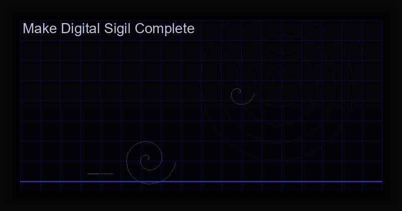

How to Make a Digital Sigil: Complete Guide to Tech Sigilization (2026)
Introduction to Digital Sigilization
Digital sigilization is the practice of creating magical sigils using computer algorithms, cryptographic functions, and digital rendering techniques. While the core principles remain the same as Austin Osman Spare's original method — intent, encoding, charging, and release — digital tools introduce a level of precision and reproducibility that hand-drawing cannot match.
This guide covers three methods for creating digital sigils: from simple image editors to cryptographic programming and dedicated mobile apps like the Chaos Sigil Generator.
Method 1: The Classic Spare Method (Digital Adaptation)
Start with the traditional process on your computer:
- Write your intention as a clear, present-tense statement: "I now attract financial abundance."
- Remove vowels and repeating consonants to create the sigil seed: "NTRCTFNNCLBNDNC."
- Combine letters into a symbol using a drawing app or vector editor. Merge, overlap, and stylize until the original letters are unrecognizable.
- Save as a digital image for charging later.
This method works but relies on your artistic ability, which can introduce self-doubt — the enemy of effective sigilization.
Method 2: Cryptographic Sigil Programming
For practitioners comfortable with technology, cryptographic sigilization replaces subjective design with mathematical precision:
- Hash your intention using SHA-256 or similar to produce a fixed-length hexadecimal string.
- Map the hash to coordinates using an alphabet grid or planetary kamea.
- Render the sigil by connecting mapped points, producing a unique but deterministic symbol.
This method ensures that the same intention always produces the same sigil (deterministic), while the cryptographic one-way function prevents reverse-engineering of the intent. For a deeper dive, see our guide on cryptographic sigil programming.
Method 3: Using a Dedicated Sigil Generator App
The easiest and most powerful method is using a specialized app like the Chaos Sigil Generator:
- Enter your intention as a text statement.
- Select an alphabet system — Theban, Enochian, Elder Futhark, or Planetary seals.
- Choose a planetary kamea for energy correspondence (Jupiter for expansion, Saturn for binding, etc.).
- Generate — the app creates a cryptographic sigil instantly.
- Use the built-in charging timer to fire your sigil during gnosis.
This method combines cryptographic precision with occult symbolism, making it ideal for both beginners and advanced practitioners.
Best Practices for Digital Sigils
- Use cryptographic randomization for genuine unpredictability, not pseudo-random algorithms.
- Choose alphabet systems that resonate with your intention — planetary seals for cosmic forces, runes for Nordic magic, Theban for traditional witchcraft.
- Combine multiple systems for complex intentions. A wealth sigil might use Jupiter's kamea with Fehu rune overlay.
- Store your sigils in a digital grimoire or encrypted folder. The determinism means you can regenerate them anytime.
- Charge using gnosis — the digital medium does not change the fundamental requirement of altered consciousness.
Choosing the Right Tool
For occasional practice, a drawing app and the classic method suffice. For serious sigil work, the Chaos Sigil Generator at $3.99 offers cryptographic generation, multiple alphabet systems, planetary kameas, and an integrated charging timer — everything needed for professional digital sigilization in one package.
Frequently Asked Questions
What is a digital sigil?
A digital sigil is a symbol created using computer algorithms and cryptographic processes rather than hand-drawing. The intention is encoded as text, processed through a hash function or mathematical algorithm, and rendered as a unique visual symbol. Digital sigils maintain the same magical function as traditional sigils but offer perfect reproducibility and mathematical precision.
How do you charge a digital sigil?
Digital sigils are charged using the same gnostic methods as traditional sigils: through meditation, trance states, sensory overload, or orgasmic gnosis. The digital nature of the sigil does not change the charging process — it is the practitioner's altered state of consciousness that empowers the sigil, not the medium.
Are digital sigils more effective than hand-drawn ones?
Digital sigils offer advantages in precision, reproducibility, and cryptographic security, but effectiveness depends primarily on the practitioner's gnostic state during charging. Many practitioners find that digital sigils eliminate the artistic anxiety that can interfere with traditional sigil creation, allowing deeper focus on the intention itself.